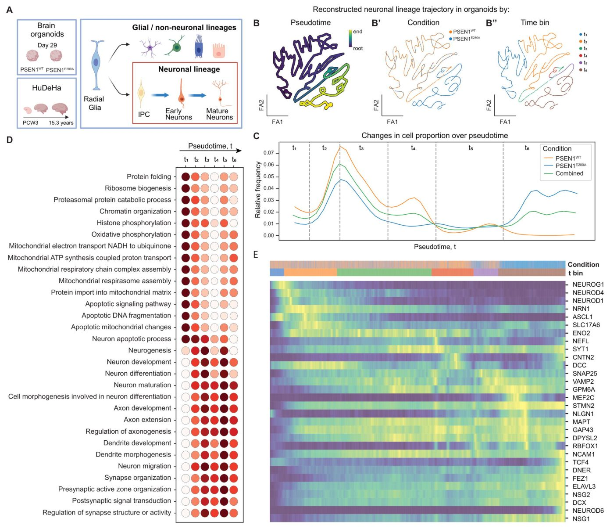

Альцгеймер ауруын зерттеуге арналған адам гиппокампының жасушалық картасы
) гиппокамп дамуының эмбрионалдық кезеңнен постнаталдық кезеңге дейінгі уақытша динамикасын қамтиды](../../media/2026-09-22/a-lifespan-single-cell-atlas-of-the-human-developing-hippoca-f1.jpg)
Суреттің толық сипаттамасы
1-сурет. Адамның дамушы гиппокамп атласы (HuDeHA) гиппокамп дамуының эмбрионалдық кезеңнен постнаталдық кезеңге дейінгі уақытша динамикасын қамтиды. (A) 20 аннотацияланған жасуша класын көрсететін адамның дамушы гиппокамп атласының (HuDeHA; 658 059 жасуша) UMAP-эмбеддингі. Атлас радиалды глия мен аралық жасуша-ізбасарлардан (IPC) бастап ерте және жетілген нейрондарға дейінгі нейрондық желіні, сонымен қатар радиалды глия мен IPC пролиферациялық күйлерін; глиалды ізбасарлардан, олигодендроциттердің ізбасар жасушаларынан (OPC), олигодендроциттерден және астроциттерден тұратын глиалды желіні; эктодермалық нейрондық емес популяцияларды (эпендима және тамырлы өрім); нейрондық қырқаны (NC) және NC-ден туындаған нейрондарды; эктодермалық емес популяцияларды (мезенхималық, эндотелийлік, микроглиалды/миелоидты және басқа иммундық жасушалар) және жұлын/мишықпен байланысты шағын топты қамтиды. (B) Даму барысындағы (тұжырымдамадан кейінгі 3-аптадан (PCW) 15,3 жасқа дейін) жасуша кластары үлесінің тығыздығы нейрогенезден глиогенезге және постнаталдық жасуша кластарының пайда болуына ауысуды көрсетеді: радиалды глия мен NC эмбрионалдық үлгілерде басым; IPC және глиалды ізбасарлар фетальды кезеңдерде пайда болады, ал жетілген нейрондар астроциттер мен олигодендроциттермен бірге туғаннан кейін басым болады. (C) Даму барысындағы жеке жасуша кластарының пропорционалды динамикасы, даму жасы бойынша шешілген. (B)-ге қосымша, бұл көрініс жеке кластардың пайда болу және жойылу уақытын көрсетеді: радиалды глия мен ерте нейрондардың эмбрионалдық басымдығы, NC-ден туындаған жасушалардың біртіндеп жойылуы мен глиалды ізбасарлардың кеңеюі, сондай-ақ жетілген нейрондардың OPC, олигодендроциттер және астроциттермен қатар постнаталдық басымдығы. (D) Барлық 20 аннотацияланған жасуша класы бойынша канондық маркерлердің экспрессиясын көрсететін нүктелік диаграмма (dotplot): радиалды глия (VIM, SOX2), IPC (EOMES), пролиферацияланатын радиалды глия және IPC (TOP2A, MKI67), ерте (DCX) және жетілген нейрондар (SNAP25), Кахаль-Ретциус (CR) нейрондары (RELN), глиалды ізбасарлар (BCAN), OPC (OLIG1), олигодендроциттер (MBP), астроциттер (GFAP), эктодермалық нейрондық емес популяциялар – эпендима (PIFO), тамырлы өрім (TTR), NC (MPZ) және NC-ден туындаған нейрондар (ISL1), мезенхима (DCN), эндотелий (CLDN5), микроглия (CX3CR1) және иммундық жасушалар (CD3D), жұлын/мишық тобы (CDX2/4).
Гиппокамп — жады мен бағдарлауға жауап беретін ми бөлігі. Зерттеушілер осы құрылымның эмбриондық кезеңнен ересек жасқа дейінгі даму атласын жасады. Бұл жұмыс сау мидың дамуын тұқым қуалайтын Альцгеймер ауруын модельдейтін органоидтармен салыстыруға мүмкіндік береді.
Басты ойлар
- Адам гиппокампының жеке жасуша деңгейіндегі даму атласы жасалды
- Нейрондар мен глиальды жасушалардың жетілу кезеңдері анықталды
- Альцгеймер ауруының органоидтары даму эталондарымен салыстырылды
Толығырақ
Авторлар адам гиппокампының онтогенез кезеңдеріндегі транскриптомдық профилін талдау үшін жеке жасушалардың РНҚ секвенирлеу (scRNA-seq) әдісін қолданды. Зерттеу кең уақыт аралығын қамтып, нейрондар мен глиальды жасушалардың әртүрлі түрлері үшін ерекше молекулалық маркерлерді анықтауға мүмкіндік берді. Синаптикалық пластика және нейрогенезбен байланысты гендер экспрессиясының динамикасына ерекше назар аударылды.
Алынған деректер Альцгеймер ауруы бар науқастардың индуцирленген плюрипотентті дің жасушаларынан (iPSC) алынған ми органоидтарының сапасын бағалау үшін өлшемшарт болды. Салыстыру зертханалық модельдердің адам миының даму үлгілерін қаншалықты дәл қайталайтынын көрсетті. Бұл нейрондардың өлуіне дейін болатын алғашқы молекулалық ауытқуларды анықтауға көмектеседі.
Шектеулер
Зерттеу органоидтарды атласпен салыстыруға негізделген, алайда органоидтар мидың күрделі архитектурасы мен қан айналымын толық қайталамайды.
Мақаланың толық талдауы
Түйіндеме
Отбасылық Альцгеймер ауруы (fAD) — APP, PSEN1 немесе PSEN2 гендеріндегі аутосомды-доминантты нұсқалар тудыратын аурудың ерте басталатын түрі, мұнда PSEN1 ең жиі кездесетін генетикалық себеп болып табылады. Гиппокамп — Альцгеймер ауруы кезінде ең алғашқы және ең қатты зақымданатын ми аймақтарының бірі. Индуцирленген плюрипотентті дің жасушаларынан (iPSC) алынған ми органоидтары ми дамуының ерте кезеңдерін қайталайды және fAD мутацияларының нейрогенезге әсерін зерттеуге мүмкіндік береді. Алайда, бұл модельдерді интерпретациялау әртүрлі хаттамаларға байланысты аймақтық сәйкестік, жетілу дәрежесі және жасушалық құрамдағы айырмашылықтарға байланысты қиындайды.
Түсіндірме
iPSC-органоидтар — пациенттің дің жасушаларынан өсірілген, ми құрылымдарын имитациялайтын үш өлшемді жасушалық құрылымдар.
Адам гиппокампының қолда бар жалғыз жасушалық зерттеулері пренатальды және постнатальды кезеңдерді қамтиды, бірақ дамудың үздіксіз анықтамалығын ұсынбайды. Осы мәселені шешу үшін Адамның дамушы гиппокамп атласы (HuDeHA) құрылды.
HuDeHA атласы ұрықтанудан кейінгі 3-аптадан 15,3 жасқа дейінгі кезеңді қамтитын 658 059 жасушадан тұратын интеграцияланған деректер базасы болып табылады. Бұл ресурс Колумбия халқында жиі кездесетін PSEN1E280A мутациясын тасымалдайтын iPSC-органоидтарын бағалау үшін қолданылды. Салыстырмалы талдау PSEN1E280A мутациясы бар органоидтарда жасушалық құрамның өзгергенін көрсетті: радиалды глияның азаюы және жүйке жотасынан шыққан нейрондардың көбеюі байқалды.
Маңызды
HuDeHA аясында 658 059 жасушаны талдау PSEN1E280A мутациясы радиалды глия популяциясының азаюына және жетілген нейрондық күйлерге қарай ауытқуға әкелетінін анықтады.
Бұл өзгерістер транскрипциялық ауытқулармен қатар жүрді: вентральды өрнектеу факторы MEIS2-нің кең көлемде белсендірілуі және тамырлы өрім (choroid plexus) мен эпендимальды жасушаларда амилоид-бета байланыстырушы TTR ақуызының төмендеуі байқалды. Нейрондық желілердің даму траекторияларын қайта құру мутантты органоидтарда жетілген күйлерге қарай ығысу бар екенін көрсетті.
Абайлаңыз
Зерттеу органоидтарды эталондық атласпен салыстыруға негізделген; in vitro нәтижелері тірі ағзадағы күрделі нейродегенерация процестерін толықтай көрсетпеуі мүмкін.
Кіріспе
Отбасылық Альцгеймер ауруы және органоидтық модельдеу
Отбасылық Альцгеймер ауруы (fAD) APP, PSEN1 немесе PSEN2 гендеріндегі аутосомды-доминантты нұсқалармен байланысты, мұнда PSEN1 ерте басталатын тұқым қуалайтын аурудың ең жиі кездесетін генетикалық себебі болып табылады. Патогендік PSEN1 нұсқалары γ-секретаза арқылы жүретін Aβ өндірісін өзгертіп, агрегацияға бейім ұзын Aβ түрлерінің жинақталуына және Aβ42/Aβ40 қатынасының артуына әкеледі. Бұл мутациялар адам дамуының қай кезеңінде жасушалық бағдарламаларды бұза бастайтыны әлі белгісіз.
Маңызды
PSEN1 геніндегі мутациялар Aβ өндірісін агрегацияға бейім формаларға қарай ығыстырады, алайда бұл өзгерістердің ми дамуына әсері толық зерттелмеген.
Индуцияланған плюрипотентті дің жасушаларынан (iPSC) алынған ми органоидтары адамның жүйке жүйесінің ерте дамуын бақыланатын генетикалық жағдайларда модельдеуге мүмкіндік береді. Бұл үш өлшемді құрылымдар тіндердің қалыптасуы мен нейрондардың жетілу процестерін қайталайды. Алдыңғы зерттеулер негізінен амилоидты алмасуға, тау-патологиясына және синапстық бұзылуларға бағытталған, ал мутациялардың ерте даму мен жасушалық желілердің дифференциациясына әсері аз зерттелген.
Түсіндірме
Органоидтар — дамып келе жатқан органның, атап айтқанда мидың құрылымы мен функцияларын имитациялайтын үш өлшемді жасушалық модельдер.
Адам гиппокампының даму атласы (HuDeHA)
Органоидтар деректерін интерпретациялау олардың гетерогенділігі мен жасушалардың толық жетілмегендігіне байланысты қиынға соғады, бұл генотип әсерлерін тін құрамындағы кездейсоқ айырмашылықтардан ажыратуды қиындатады. Осы мәселені шешу үшін «Адам гиппокампының даму атласы» (HuDeHA) құрылды. Ол 658 059 жасушаны қамтиды және ұрықтанудан кейінгі 3-аптадан (PCW3) 16-аптаға дейінгі (PCW16), сондай-ақ кейінгі фетальды және постнатальды кезеңдерді жасөспірімдік шаққа дейін қамтиды.
Абайлаңыз
Органоидтар толыққанды ми емес: олар мақсатты емес жасуша түрлерін қамтуы және толық емес дифференциацияны көрсетуі мүмкін, сондықтан оларды даму атластарымен салыстыру қажет.
HuDeHA қолдану PSEN1E280A мутациясы бар органоид жасушаларын жүйелі түрде аннотациялауға және олардың жетілу сатысын бағалауға мүмкіндік берді. Талдау көрсеткендей, PSEN1E280A мутациясы бар органоидтар радиалды глияның азаюымен, жүйке жотасынан шыққан нейрондардың көбеюімен және даму бағдарламаларындағы ерекше өзгерістермен, сондай-ақ нейрондардың жетілу сатысындағы шамалы ауытқулармен сипатталады.
Нәтижелер
Адамның дамып келе жатқан гиппокамп атласы (HuDeHA) пре- және постнаталдық кезеңдегі негізгі жасуша түрлерін анықтайды
Авторлар 658 059 жасушаны қамтитын 107 scRNA-seq деректер жиынтығын біріктіре отырып, дамып келе жатқан адам гиппокампының атласын (HuDeHA) жасады (Сурет 1A; Сурет SN; Кесте SN). Таңдама ұрықтанудан кейінгі 3-аптадан (PCW3) жасөспірім шаққа дейінгі (15,3 жас) кезеңді қамтиды. Талдау нейрондық, глиальды, тамырлық және иммундық желілерді қоса алғанда, 20 негізгі жасуша түрін бөліп көрсетуге мүмкіндік берді (Сурет 1D).
Суреттің толық сипаттамасы
1-сурет. Адамның дамушы гиппокамп атласы (HuDeHA) гиппокамп дамуының эмбрионалдық кезеңнен постнаталдық кезеңге дейінгі уақытша динамикасын қамтиды. (A) 20 аннотацияланған жасуша класын көрсететін адамның дамушы гиппокамп атласының (HuDeHA; 658 059 жасуша) UMAP-эмбеддингі. Атлас радиалды глия мен аралық жасуша-ізбасарлардан (IPC) бастап ерте және жетілген нейрондарға дейінгі нейрондық желіні, сонымен қатар радиалды глия мен IPC пролиферациялық күйлерін; глиалды ізбасарлардан, олигодендроциттердің ізбасар жасушаларынан (OPC), олигодендроциттерден және астроциттерден тұратын глиалды желіні; эктодермалық нейрондық емес популяцияларды (эпендима және тамырлы өрім); нейрондық қырқаны (NC) және NC-ден туындаған нейрондарды; эктодермалық емес популяцияларды (мезенхималық, эндотелийлік, микроглиалды/миелоидты және басқа иммундық жасушалар) және жұлын/мишықпен байланысты шағын топты қамтиды. (B) Даму барысындағы (тұжырымдамадан кейінгі 3-аптадан (PCW) 15,3 жасқа дейін) жасуша кластары үлесінің тығыздығы нейрогенезден глиогенезге және постнаталдық жасуша кластарының пайда болуына ауысуды көрсетеді: радиалды глия мен NC эмбрионалдық үлгілерде басым; IPC және глиалды ізбасарлар фетальды кезеңдерде пайда болады, ал жетілген нейрондар астроциттер мен олигодендроциттермен бірге туғаннан кейін басым болады. (C) Даму барысындағы жеке жасуша кластарының пропорционалды динамикасы, даму жасы бойынша шешілген. (B)-ге қосымша, бұл көрініс жеке кластардың пайда болу және жойылу уақытын көрсетеді: радиалды глия мен ерте нейрондардың эмбрионалдық басымдығы, NC-ден туындаған жасушалардың біртіндеп жойылуы мен глиалды ізбасарлардың кеңеюі, сондай-ақ жетілген нейрондардың OPC, олигодендроциттер және астроциттермен қатар постнаталдық басымдығы. (D) Барлық 20 аннотацияланған жасуша класы бойынша канондық маркерлердің экспрессиясын көрсететін нүктелік диаграмма (dotplot): радиалды глия (VIM, SOX2), IPC (EOMES), пролиферацияланатын радиалды глия және IPC (TOP2A, MKI67), ерте (DCX) және жетілген нейрондар (SNAP25), Кахаль-Ретциус (CR) нейрондары (RELN), глиалды ізбасарлар (BCAN), OPC (OLIG1), олигодендроциттер (MBP), астроциттер (GFAP), эктодермалық нейрондық емес популяциялар – эпендима (PIFO), тамырлы өрім (TTR), NC (MPZ) және NC-ден туындаған нейрондар (ISL1), мезенхима (DCN), эндотелий (CLDN5), микроглия (CX3CR1) және иммундық жасушалар (CD3D), жұлын/мишық тобы (CDX2/4).
Маңызды
HuDeHA атласы 658 059 жасушаны 20 түрге жіктейді, бұл ұрықтанудан кейінгі 3-аптадан 15,3 жасқа дейінгі кезеңде нейрогенезден глиогенезге өтуді көрсетеді.
Нейроэктодермалдық желі радиалды глияны (194 105 жасуша; VIM, SOX2, NES маркерлері) және оның пролиферацияланатын субпопуляциясын (11 390 жасуша; TOP2A, MKI67, UBE2C, CDK1) қамтиды. Одан әрі аралық ізашар жасушалар (IPC; 15 033 жасуша; EOMES, ASCL1) және олардың пролиферацияланатын тобы (3 860 жасуша) жүреді. Олар ерте нейрондарға (246 627 жасуша; DCX, NEUROD2, ELAVL3) және жетілген нейрондарға (95 335 жасуша; RBFOX3, SNAP25, SYT1) дифференциацияланады. Сондай-ақ Кахаль-Ретциус нейрондары (170 жасуша; RELN) анықталды.
Түсіндірме
scRNA-seq (бір жасушалы РНҚ секвенирлеуі) — әрбір жеке жасушадағы гендердің белсенділігін анықтау әдісі, бұл сирек кездесетін жасуша түрлерін және олардың даму жолдарын анықтауға көмектеседі.
Глиальды желі ізашарлардан (8 536 жасуша; BCAN, TNC), олигодендроциттерден (7 908 жасуша; PLP1, MBP), олардың ізашарларынан (OPC; 11 483 жасуша; OLIG1, PDGFRA) және астроциттерден (15 701 жасуша; GFAP, AQP4) тұрады. Қосымша эпендималды жасушалар (2 200 жасуша), хориоидты өрім жасушалары (2 119 жасуша), сондай-ақ жүйке жотасы (NC; 10 036 жасуша) және одан туындаған нейрондар (6 302 жасуша) сипатталған. Эктодермалды емес популяцияларға мезенхима (8 052 жасуша), эндотелий (228 жасуша), микроглия (4 876 жасуша) және басқа иммундық жасушалар (160 жасуша) жатады. Сондай-ақ жұлын/мидың артқы бөлігіне қатысты шағын жасушалар тобы (480 жасуша; CDX2, CDX4) табылды (Сурет 1D).
PCW3-тен 15,3 жасқа дейінгі жасушалық құрамның динамикасы ерте эмбрионалдық кезеңдердің радиалды глия мен жүйке жотасы жасушаларына бай екенін, ал постнаталдық кезеңде жетілген нейрондар мен дифференциацияланған глиальды жасушалар басым екенін көрсетеді (Сурет 1B, C; Сурет SN). CytoTRACE2 көмегімен даму әлеуетін бағалау пролиферацияланатын ізашарлардан (медиана 0,57) жетілген нейрондарға дейін (медиана 0,05) баллдардың төмендеуін көрсетті, бұл дифференциация кезінде пластикалық қасиеттің жоғалуын растайды (Сурет 1G; Сурет SN).
Абайлаңыз
Зерттеу қолда бар деректерді біріктіруге (мета-талдау) негізделген, сондықтан нәтижелер бастапқы таңдамалардың сапасына және жасуша түрлерінің аннотациясының дәлдігіне байланысты.
HuDeHA fAD органоидтарының деректерін референс негізінде карталауға мүмкіндік береді
Талдау үшін iPSC-ден алынған ми органоидтарының scRNA-seq деректер жиынтығы пайдаланылды, оған төрт генотип кіреді: PSEN1WT/APOEWT, PSEN1WT/APOECh, PSEN1E280A/APOEWT және PSEN1E280A/APOECh. Деректер екі донордың iPSC фонынан алынған сегіз CRISPR жасушалық желісінен жасалған сегіз кітапханадан тұрды (секвенирлеуге дейін әр желі үшін алты органоид біріктірілді). Біз scPoli — референс HuDeHA-дан органоид деректеріне жасуша түрлерінің белгілерін көшіруге арналған жартылай бақыланатын нейрондық желі моделін қолдандық (2A-сурет). Бұл әдіс прогениторлар, нейрондар, эпителиальды/вентрикулярлық, мезенхимальды және NC-жасушаларының желілерін бөлуге мүмкіндік берді (2B-сурет). Бұл кезеңде дифференциалданған глиальды немесе иммундық/тамырлы популяциялар анықталмады.
Маңызды
scPoli әдісі органоид жасушаларын жіктеуге мүмкіндік берді, мұнда ерте нейрондар (19 131 жасуша) мен радиалды глияның (18 384 жасуша) басымдығы, ал IPC (1 308) және жетілген нейрондардың (877) азшылықты құрайтыны анықталды.
Түсіндірме
scPoli — бұл жаңа тәжірибе деректерін бұрыннан белгілі «атласпен» (референспен) салыстырып, үлгідегі жасуша түрлерін автоматты түрде анықтайтын машиналық оқыту құралы.
IPC популяциясы ASCL1 және HES6-ны экспрессиялады, ал EOMES жасушалардың 1%-дан азында ғана анықталды. Ерте нейрондар TUBB3, STMN2, DCX-ті, ал жетілген нейрондар GRIN2B және GRIA2-ні экспрессиялады (2C, D-сурет). S100B сигналы, сондай-ақ MPZ, FOXD3 және SOX10 маркерлері NC-компартментімен байланысты болды (2B, C, D-сурет).
Арнайы популяцияларды талдау және аннотация дәлдігі
Эпендима және глиальды прогениторлар сияқты кейбір топтар аннотацияның жоғары белгісіздік көрсеткіштеріне ие болды (S2A-сурет). Біз HuDeHA-да жоқ, CFAP (CFAP126, CFAP144, CFAP276, CFAP141, CFAP90) арқылы байытылған популяцияны анықтадық және оны «ерте эпендимальды» деп жіктедік (S2B-сурет). Бұл жасушалар FOXJ1-ді экспрессиялады, бірақ кірпікшелердің жиналуына арналған негізгі гендер жиынтығына ие емес еді. Глиальды прогениторлар LMX1A/B, MSX1, GDF7 және WNT1/3A маркерлерін көрсетті (2C-сурет, S2C-сурет), бірақ канондық маркерлер TNC, BCAN және NFIB әлсіз экспрессияланған немесе мүлдем жоқ еді (S2D-сурет).
Абайлаңыз
Бағалау in vitro органоидтарында жүргізілді; ген экспрессиясындағы айырмашылықтар in vivo тіндеріне қарағанда толық емес дифференциацияны көрсетеді.
Ұқсастықты бағалау үшін Жаккар индексі мен Пирсон корреляциясы пайдаланылды (2E-сурет, S3A-C-сурет). Референспен ең үлкен ұқсастықты мезенхимальды жасушалар (Жаккар индексі = 0,38) және ерте нейрондар (0,32) көрсетті. Прогениторлық популяциялар кеңірек қамтуды көрсетті (Жаккар индексі 0,29–0,32). Ерте эпендимальды жасушалар барлық референс сыныптарымен төмен ұқсастыққа ие болды, бұл олардың органоидтарға тән популяция ретіндегі мәртебесін растайды. Бақылау топтары (астроциттер, OPC, олигодендроциттер, микроглия) органоид жасушаларымен айтарлықтай ұқсастық көрсетпеді (S3B-сурет).
HuDeHA даму жасының аннотацияларын пайдалана отырып, біз fAD органоидтары деректер жиынында даму кезеңдерінің ұқсастығын болжау үшін scPoli әдісін қолдандық. Болжанған органоид күйлері ерте пренатальды кезеңнен постнатальды кезеңге дейінгі HuDeHA анықтамалық диапазонын қамтыды (Сурет 2F). Органоид жасушаларының көпшілігі ерте пренатальды кезеңдерге, атап айтқанда PCW4–PCW9-ға сәйкес келді, ал тек 1%-ға жуығы PCW11 немесе одан кейінгі даму кезеңдеріне, соның ішінде постнатальды жасқа сәйкес келді (Сурет 2G). Біз әрбір жасуша класы үшін жас топтарына тағайындалған жасушалардың үлесін есептеп, бұл өрнектерді жылу картасы ретінде визуализацияладық (Сурет 2H). Нәтижелер даму ұйымына сәйкес келді: ерте болжанған жастар прогениторға ұқсас және нейрондық емес популяцияларда, соның ішінде пролиферацияланатын прогениторлар, мезенхимальды жасушалар және NC жасушаларында байыған, ал кейінгі және постнатальды жастағы болжамдар жетілген нейрондар мен эпендимальды жасушалар сияқты дифференциалданған популяцияларда шоғырланған.

Суреттің толық сипаттамасы
2-сурет. HuDeHA-мен салыстыру iPSC-ден алынған ми органоидтарын in vivo гиппокамп жасушалық күйлерімен және даму уақытымен салыстыруға мүмкіндік береді. (A) Талдау жұмыс процесінің сызбасы. HuDeHA (3 PCW-ден 15,3 жасқа дейін; 20 жасуша класы) iPSC-ден алынған PSEN1WT және PSEN1E280A адам миының органоидтарына жасуша класы мен даму жасы белгілерін scPoli негізінде тасымалдау үшін эталон ретінде қызмет етті. scPoli алгоритмі эталон мен сұраныстың гендер жиынтығының қиылысында (22 467 ген) оқытылды және органоид жасушалары белгілерді болжау үшін үйретілген латентті кеңістікке проекцияланды. (B) HuDeHA-дан алынған 12 болжамды жасуша класы бойынша боялған iPSC-ден алынған адам миының органоидтарының UMAP-ы, одан кейін шектеулі қолмен түзету (Әдістерді қараңыз). Жұлдызшалар HuDeHA-ға қатысты жаңадан анықталған немесе біріктірілген кластарды белгілейді: «ерте эпендима» (қолмен қосылған, HuDeHA-да жоқ) және «пролиферацияланатын ізбасарлар» (пролиферацияланатын радиалды глия мен пролиферацияланатын IPC жиынтығы). (C) Органоидтардың бір жасушалы эмбеддингіндегі таңдалған аймақтық және желілік маркерлердің сипаттамалық сызбалары (feature plots). PAX6 кең дорсальды ізбасарлар компартментін, GRIA2 жеке жетілген нейрондық популяцияны, S100B негізінен NC популяциясын (эпендима тәрізді жасушаларда қосымша экспрессиямен), ал WNT1 дорсальды орта сызыққа ұқсас шағын популяцияны белгілейді, бұл төбе пластинкасының немесе кортикальды жиектің сәйкестігімен келіседі. (D) Болжамды органоидтық жасуша кластары үшін маркер-ген экспрессиясының нүктелік диаграммасы: пролиферацияланатын ізбасарлар (TOP2A, MKI67); радиалды глия (SOX2); IPC (ASCL1); ерте нейрондар (TUBB3) және жетілген нейрондар (GRIN2B); NC-ден туындаған нейрондар (ISL1); глиалды ізбасарлар (SOX9); ерте эпендима (CFAP144) және эпендима (FOXJ1); тамырлы өрім (TTR); NC (MPZ, FOXD3); және мезенхима (DCN, PRRX1). (E) Әрбір класс үшін 1500 ең жоғары дифференциалды экспрессияланатын (DE) гендер бойынша есептелген HuDeHA және органоидтық жасуша кластары арасындағы Жаккар ұқсастығының жылу картасы, классқа тән маркер-ген бағдарламалары арасындағы сәйкестікті сандық бағалайды. (F) Даму кезеңдеріне біріктірілген болжамды жас топтары бойынша боялған органоидтардың UMAP-ы. (G) Жасушалар санының логарифмдік шкаласындағы болжамды даму жасының таралуы. Жасушалар бір органоид жинау уақытында кең даму гетерогенділігін қамтиды: жасушалардың көпшілігі PCW4–PCW9 кезеңіне сәйкес келеді, кішірек бөлігі постнаталдық кезеңдерге жатады. (H) Болжамды жас топтары бойынша жасуша кластары үлестерінің жылу картасы. Ерте кезеңмен байланысты кластар (пролиферацияланатын ізбасарлар, NC-ден туындаған нейрондар) ерте пренаталдық жас үшін байытылған, ал кешкі кезеңмен байланысты кластар (тамырлы өрім, эпендима, жетілген нейрондар, олигодендроциттер) кейінгі жас үшін байытылған.
Маңызды
fAD органоидтары негізінен ерте даму кезеңдеріне (PCW4–PCW9) сәйкес келеді, ал дифференциалданған жасушалар күтілгендей кейінгі жетілу белгілерін көрсетеді.
PSEN1E280A органоидтары жасуша класының құрамы мен транскрипциялық профильдеріндегі айырмашылықтарды көрсетеді
Біз PSEN1E280A органоидтарының PSEN1WT органоидтарына қарағанда жасуша класының құрамында өзгерістер бар-жоғын тексердік (Сурет 3A-B). Біз әрбір органоид үшін жасуша класының пропорцияларын анықтадық және scCODA, яғни бір жасушалы есептеу деректерін дифференциалды құрамдық талдауға арналған Байес жүйесі арқылы статистикалық қолдауды бағаладық (Сурет 3B). Бұл талдау мутантты органоидтарда WT-ге қарағанда жүйке жотасынан (NC) туындаған нейрондардың сенімді өсуін және радиалды глияның азаюын анықтады. Әрбір жасуша класы мен жағдайында болжанған жасты қарастырдық (Сурет 3C). Нәтижесінде алынған жылу картасы күтілетін даму ретін қайталады: NC жасушалары, мезенхимальды жасушалар және пролиферацияланатын прогениторлар үшін ерте болжанған жастар, ал жетілген нейрондар мен хориоидты өрім сияқты дифференциалданған популяциялар үшін кейінгі жастар белгіленді. Болжанған жас таралымдары үшін Cliff’s delta мәнін есептедік. Талдау көрсеткендей, PSEN1E280A органоидтарындағы пролиферацияланатын прогениторлар мен NC-нейрондары WT органоидтарына қарағанда жасырақ (сәйкесінше 5,5-ке қарсы 6,7 PCW және 5,7-ге қарсы 7,4 PCW).

Суреттің толық сипаттамасы
3-сурет. PSEN1E280A желілік тепе-теңдіктің өзгеруімен және нейрондық спецификацияның, ізбасар және қарыншалық бағдарламалардың классқа тән дисрегуляциясымен байланысты. (A) Шарттар бойынша бөлінген (PSEN1WT үшін n = 2 және PSEN1E280A органоидтары үшін n = 6) ми органоидтарының UMAP-ы, болжамды жасуша класы бойынша боялған, шарттар арасындағы жасуша класының таралуындағы айырмашылықтарды көрсетеді. (B) Әрбір жасуша класының шарттар бойынша пайыздық құрамын көрсететін бағаналы диаграммалар. Жұлдызшалар шарттар арасында салыстырмалы мөлшері бойынша айтарлықтай айырмашылығы бар жасуша кластарын көрсетеді. WT органоидтарымен салыстырғанда, PSEN1E280A органоидтары NC-ден туындаған нейрондардың жоғары үлесін және радиалды глияның төмендеген үлесін көрсетті. Оң жақтағы кесте әрбір шарттағы әрбір жасуша класының нақты пайызын береді. (C) Бүкіл деректер жиынтығы бойынша орташа мәннің кему ретімен жасуша класы бойынша орташа болжамды даму жасының жылу картасы. Жұлдызшалар Клифф дельтасы арқылы бағаланған шарттар арасындағы елеулі жас айырмашылықтары бар жасуша кластарын белгілейді. Шекті мәндер: түзетілген p-мәні ≤ 0,05. (D) Жасуша класы бойынша шешілген PSEN1E280A және WT органоидтарындағы дифференциалды экспрессияланатын гендер. Жоғары экспрессияланатын гендер қызыл, төмен экспрессияланатындары жасыл түспен көрсетілген; жасуша кластары DE-гендердің жалпы санының кему ретімен орналастырылған. Әрбір класс үшін ең ақпаратты 10 ген белгіленген; log2FC осі визуализация үшін масштабталған. Шекті мәндер: түзетілген p-мәні ≤ 0,05, /log2FC/ ≥ 0,5.
Түсіндірме
scCODA — бұл бір жасушалы секвенирлеу деректеріндегі жасуша түрлерінің пропорцияларының өзгеруін талдауға арналған статистикалық әдіс.
Әрбір жасуша класындағы дифференциалды экспрессия талдауы (DEG) NC және NC-нейрондарында, сондай-ақ хориоидты өрімде ең жоғары өзгерістерді көрсетті (Сурет 3D). Қайталанатын транскрипциялық өзгерістер арасында MEIS2 жетілген нейрондарда, ерте нейрондарда, IPC және глиальды прогениторларда жоғары деңгейде экспрессияланған, ал MEIS1 жетілген нейрондарда ең көзге түсетін болды. NR2F1 жетілген нейрондарда, ерте нейрондарда және жүйке жотасы жасушаларында өскен, ал TAC1 жетілген және ерте нейрондарда көтерілген. NC-нейрондарында HES6 және NEUROD1 NFIA-мен бірге күшті деңгейде өскен. Пролиферацияланатын прогениторлар S100B, LGALS1 және S100A10-ның өсуін, SLIT2 және TENM2-нің азаюын көрсетті. Радиалды глия S100B және APOE-нің өсуін, RSPO2-нің азаюын көрсетті. Хориоидты өрім жасушалары TTR, IGF1 және RSPO2-нің азаюын және FOLR1-дің өсуін көрсетті. Эпендимальды жасушалар MSX1-дің өсуін және митохондриялық кодталған транскрипттердің (MT-CO1, MT-CO2, MT-CO3, MT-CYB, MT-ATP6) үйлестірілген төмендеуін көрсетті.
Абайлаңыз
Зерттеу органоидтарда (in vitro) жүргізілген; бақыланған ген экспрессиясы мен жасуша құрамындағы айырмашылықтар адам ми тіндерінде расталуы керек.
Жолдарды байыту баллдарын салыстыру PSEN1E280A мен WT арасындағы ең айқын айырмашылықтар WNT-пен байланысты екенін көрсетті, олар мутантты органоидтардың пролиферацияланатын прогениторларында азайған (Сурет SN). HuDe SN). HuDeHA анықтамалықтарымен салыстырғанда, PSEN1E280A органоидтарындағы пролиферацияланатын жасушалар WNT сигнал беруі бойынша ең айқын айырмашылықты көрсетті.
Нейрондық траекторияны талдау жетілу динамикасындағы өзгерістерді анықтады
Зерттеушілер нейрондық желіні талдап, HuDeHA-ны in vivo эталон ретінде пайдалана отырып, прогениторлық жасушалар (IPC), ерте және жетілген нейрондар бойынша псевдоуақыт шкаласын (pseudotime) құрды (Сурет 4A, B). Псевдоуақыт тәртібі дифференциация кезеңдеріне сәйкес келді. Нейрогендік детерминацияға жауап беретін NEUROG1, NEUROD1, NEUROD4 және ASCL1 транскрипция факторлары ерте кезеңдерде белсенді болды. Сонымен қатар, нейрондық құрылым мен синапстық функцияға байланысты гендер (MAPT, SNAP25, SYT1, VAMP2, NLGN1) кешкі кезеңдерде жоғары экспрессияны көрсетті (Сурет 4E, Сурет S5).

Суреттің толық сипаттамасы
4-сурет. PSEN1E280A нейрондық дифференциацияны жетілген даму күйлеріне қарай өзгертеді. (A) Нейрондық желі траекториясын талдау сызбасы. IPC, ерте нейрондар және жетілген нейрондар iPSC-ден алынған ми органоидтарынан да, HuDeHA-дан да бөлініп алынды және псевдоуақыт траекторияларын қайта құру үшін пайдаланылды. Органоидтық траекториялар шарттар (PSEN1WT және PSEN1E280A) арасында салыстырылды және in vivo HuDeHA эталонымен салыстырылды.
Маңызды
Талдау PSEN1E280A жасушаларының PSEN1WT-пен салыстырғанда псевдоуақыт бойынша жетілген күйлерге қарай ығысқанын, ал траекторияның жалпы құрылымы өзгеріссіз қалғанын көрсетті.
Траектория алты сегментке (бин) бөлінді (Сурет 4C, 4B’’). Ерте сегменттер биосинтез, ақуыз фолдингі және тотығу фосфорлану процестеріне бай болса, кешкі сегменттер дифференциация, аксон мен дендриттердің дамуы және синаптогенез процестеріне бай болды (Сурет 4D). Апоптозға қатысты терминдер ерте кезеңдерде шоғырланған, бұл траекторияның жасуша өліміне емес, жетілуге бағытталғанын растайды.
Түсіндірме
Псевдоуақыт (pseudotime) — жасушаларды транскриптомдық ұқсастық негізінде даму «траекториясы» бойымен реттеуге мүмкіндік беретін есептеу әдісі.
Генотиптерді салыстыру PSEN1WT жасушаларының ерте және аралық сегменттерде (t2–t3 шыңы) шоғырланғанын, ал PSEN1E280A кешкі сегменттерде жиі кездесетінін көрсетті (Сурет 4B′, C). HuDeHA эталондық деректерімен салыстырғанда (Сурет S6A, B, D), органоидтар жалпы алғанда in vivo дамудың ерте кезеңдеріне сәйкес келетіні анықталды (Сурет S6E). Барлық органоидтар HuDeHA-ның ерте кезеңдерімен (t1–t2) ұқсастық көрсеткенімен, PSEN1E280A жасушалары жабайы типпен салыстырғанда аралық t3 кезеңімен сәл жоғарырақ ұқсастық танытты.
Абайлаңыз
Зерттеу ми органоидтарында жүргізілді; нәтижелер мутация мен жетілу қарқыны арасындағы корреляцияны ғана көрсетеді, адам ағзасындағы тікелей себеп-салдарлық байланысты емес.
Талқылау
Біз жүктіліктің 3-аптасынан (PCW) 15,3 жасқа дейінгі кезеңді қамтитын адамның дамып келе жатқан гиппокамп атласын (HuDeHA) жасадық. Бұл ресурс ерте эмбрионалды нейрогенез, пренаталды даму және постнаталды жетілу кезеңдерін біріктіреді. Қолданыстағы атластардан айырмашылығы, HuDeHA әртүрлі дереккөздерден алынған мәліметтерді интеграциялап, гиппокамп жасушаларын сүзгіден өткізу арқылы нейрондық, прогениторлық, глиалды, тамырлы және иммундық популяциялардың кешенді картасын ұсынады. Бұл in vitro жасушаларын in vivo аналогтарымен салыстыруға және аурумен байланысты органоидтардағы даму ауытқуларын анықтауға мүмкіндік береді.
Маңызды
HuDeHA гиппокамп дамуын PCW 3-аптасынан 15,3 жасқа дейін қамтиды және in vivo жасушалық құрамын органоидтық модельдермен салыстыруға көмектеседі.
HuDeHA көмегімен біз PSEN1E280A мутациясы бар (отбасылық Альцгеймер ауруы) iPSC-ден алынған ми органоидтарын талдадық. Органоид жасушаларының көпшілігі ерте эмбрионалды дамуға (шамамен 5–9 PCW) сәйкес келді. Бұл органоидтардың осы сатысында прогениторларға бай екенін және кейінгі феталды күйлерге ұқсастығының аз екенін растайды.
Референстік карталау дивергентті және органоидқа тән популяцияларды анықтайды
HuDeHA негізіндегі аннотация органоидтардың нейрондық желімен қатар жүйке жотасы (neural crest) және мезенхималық компоненттерді қамтитынын, бірақ жетілген глиалды популяциялардың анықталмағанын көрсетті. Жүйке жотасы жасушаларының болуы мутация әсерінен гөрі, хаттамалардың толық емес аймақтық шектелуімен байланысты болуы мүмкін. Нейрондық желіде радиалды глия мен ерте нейрондар басым болды, ал аралық прогениторлар (IPC) мен жетілген нейрондар аз үлесті құрады.
Түсіндірме
Жүйке жотасы (neural crest) — әдетте шеткі жүйке жүйесін қалыптастыратын эмбрионалды тін, бірақ ми органоидтарында жиі «бөгде» жасуша түрі ретінде анықталады.
Абайлаңыз
Ми органоидтары — in vitro жеңілдетілген модельдер; олардың жасушалық құрамы in vivo дамып келе жатқан миға тән емес «off-target» популяцияларды қамтуы мүмкін.
Ген экспрессиясының химерлік профильдері аннотацияны қиындатады. Тамырлы өрім (choroid plexus) және эпендимаға ұқсас популяциялар HuDeHA референсімен төмен ұқсастықты көрсетті, бұл олардың толық жетілмегенін білдіреді. Біз сондай-ақ силиогенез бағдарламасының ішінара белсенуі бар, бірақ HuDeHA-да нақты аналогы жоқ жетілмеген вентрикулярлы эпителий популяциясын анықтадық. FOXJ1 экспрессиясының төмендігі және аксонема жиналу гендерінің болмауы бұл толық жетілген эпендима емес, органоидқа тән ерте силиогендік күй екенін көрсетеді. Глиалды прогениторға ұқсас жасушалар болса, кортикальды пластинкаға немесе тамырлы өрімге жақын сигналдық күйді білдіруі мүмкін.
PSEN1E280A жасушалық желілердің бөлінуінің өзгеруімен және жасуша класына тән транскрипциялық бағдарламалармен байланысты
Композициялық талдау PSEN1E280A мутациясы органоидтардағы жасушалық желілер тепе-теңдігінің бұзылуымен байланысты екенін көрсетеді: радиалды глия популяциясының салыстырмалы азаюы және жүйке жотасы (neural crest) жасушаларының көбеюі байқалады. Бұл теңгерімсіздік жасуша-ізашарлардың (progenitor) мінез-құлқының өзгеруін, атап айтқанда, радиалды глияның өзін-өзі сақтау қабілетінің төмендеуін және нейрондық дифференциацияның жеделдеуін білдіруі мүмкін. Жүйке жотасы жасушаларының мөлшері дифференциация хаттамасына байланысты болғандықтан, анықталған өсуді мутацияның тікелей салдары емес, онымен байланысты ассоциация деп санау керек. Бұл ауытқулар дамудың алғашқы кезеңдерінде сигналдық бағдарламалардың бұзылуы дифференциация бағытын өзгертуі мүмкін деген гипотезамен сәйкес келеді.
Маңызды
PSEN1E280A мутациясы жасушалық желілер тепе-теңдігін бұзады және нейрондар мен жасуша-ізашарлардың дамуына әсер ететін транскрипциялық өзгерістерді тудырады.
Дифференциалды экспрессияны талдау дамудың көптеген желілерінде транскрипциялық өзгерістерді анықтады. Үш негізгі өрнек бөлінді: нейрондық тағдырлар спецификациясының бұзылуы, нейрогенез бағдарламаларының өзгеруі және қарыншалар эпителийі мен тамырлы өрімнің (choroid plexus) дисфункциясы. Нейрондық желілерде, соның ішінде аралық жасуша-ізашарларда (IPC) және жетілген нейрондарда MEIS2, сондай-ақ MEIS1, NR2F1 және TAC1 экспрессиясының жоғарылауы тіркелді. MEIS ақуыздары тіндердің дамуын реттейтін транскрипциялық факторлар болып табылады, ал NR2F1 ізашарлар динамикасын және кортикальды сәйкестілікті бақылайды. Бұл өзгерістердің функционалдық маңызы әлі белгісіз. Мутациясы бар органоидтардағы радиалды глия S100B және APOE деңгейінің жоғарылауын көрсетеді, бұл жетілген глия қалыптасқанға дейін ізашарлар күйінің өзгергенін білдіруі мүмкін.
Түсіндірме
Органоидтар — бұл дің жасушаларынан өсірілген, мүшелердің құрылымы мен функцияларын имитациялайтын үш өлшемді жасушалық модельдер.
Жүйке жотасынан туындаған нейрондарда HES6 және NEUROD1 экспрессиясы жоғарылаған, бұл ерте нейрогендік бағдарламалардың реттелуін көрсетеді. Алайда, бұл жасушалар дамудың алғашқы кезеңдеріне сәйкес келетіндіктен, олардың бірлескен экспрессиясы жедел дифференциациядан гөрі, жетілудің кешеуілдеуінен хабар береді. Қарыншалар мен тамырлы өрімге қатысты популяцияларда TTR деңгейінің төмендеуі тіркелді. TTR Aβ-ны байланыстыруға және тасымалдауға қатысады; оның тапшылығы Альцгеймер ауруының модельдерінде байқалатын Aβ клиренсінің бұзылуымен байланысты болуы мүмкін. Пресенилин функциясының төмендеуі көбінесе Notch-сигналдаудың басылуымен байланысты болса да, біздің деректеріміз тек пролиферацияланатын ізашарларда осы жол белсенділігінің орташа төмендеуін көрсетеді. Бұл жасушаларда WNT-сигналдаудың төмендеуі сигналдық жолдардың бұзылуы мен радиалды глияның жоғалуы арасындағы байланыстырушы буын болуы мүмкін. Жас мөлшерін картаға түсіруге сәйкес, органоидтар жүктіліктің 5–9 аптасына (PCW) сәйкес келеді. Осы кезеңде PSEN1E280A органоидтары PSEN1WT-пен салыстырғанда «жасырақ» күйлерге қарай шамалы ауытқуды көрсетеді.
Абайлаңыз
Зерттеу эмбрионалды дамудың алғашқы кезеңдерін модельдейтін органоидтарда жүргізілді; нәтижелерді ересек адамның миындағы процестерге тікелей экстраполяциялауға болмайды.
Нейрондық траекторияларды талдау дамудағы өзгерістерді анықтайды
Нейрондық желі траекторияларын талдау генотиптер арасындағы жетілу динамикасын салыстыруға және даму барысының бұзылуымен байланысты бағдарламаларды анықтауға мүмкіндік берді. Біздің деректер жиынтығында PSEN1E280A мутациясы нейрондардың жетілу траекториясы бойынша неғұрлым дамыған күйлерге ауысуымен байланысты болды. Бұл кейінгі күйлер нейрондық дифференциацияға, аксон мен дендриттердің дамуына және синапстық ұйымдасуға қатысатын гендердің күшті экспрессиясымен сипатталды. Бұл бақылаулар кейбір fAD мутациялары нейрондардың мерзімінен бұрын дифференциациясын немесе прогениторлық күйлерден тез шығуын ынталандыруы мүмкін екенін көрсететін алдыңғы зерттеулермен сәйкес келеді. Сонымен қатар, басқа зерттеулер қарама-қарсы үлгіні, мысалы, PSEN1L435F мутациясында прогениторлардың сақталуын және нейрондық дифференциацияның төмендеуін хабарлады. Бұл қарама-қарсы нәтижелер PSEN1 мутацияларының нейрондық дамуға әсері мутацияға, модельге және даму сатысына байланысты екенін көрсетеді.
Маңызды
PSEN1E280A мутациясы органоидтардағы жасушалардың жетілу траекториясы бойынша дамуын жеделдетеді, бұл дифференциация және синаптогенез гендерінің күшеюімен көрінеді.
Айта кету керек, байқалған ауытқу жасушалардың толық жетілген нейрондық сәйкестікке қол жеткізгенін емес, органоидтың даму траекториясы ішіндегі салыстырмалы жеделдеуді көрсетеді. Жалпы алғанда, PSEN1E280A органоидтардағы жасушалық күйлер тепе-теңдігін бұзады, бұл прогениторлар, нейрондар, жүйке жотасы (neural crest) тәрізді жасушалар және вентрикулярлық эпителий популяцияларын қамтиды. HuDeHA әдісі гиппокампқа тән нейрондық күйлерді органоидтарға тән популяциялардан ажыратуға және мутациямен байланысты өзгерістерді адамның даму контекстінде түсіндіруге пайдалы негіз болды.
Түсіндірме
HuDeHA — органоидтар деректерін адам миы дамуының эталондық атластарымен салыстыру арқылы жасуша түрлерін нақтылауға мүмкіндік беретін биоинформатикалық талдау әдісі.
Шектеулер
Зерттеудің шектеулеріне келетін болсақ: органоидтар жиынтығы бір жарияланған зерттеуден алынған небәрі екі PSEN1WT және алты PSEN1E280A органоидын қамтыды, бұл статистикалық қуатты және мутациямен байланысты әсерлерді органоидтар арасындағы өзгермеліліктен ажырату мүмкіндігін шектейді. Байқалған жүйке жотасынан (NC) туындаған популяциялардың көбеюі PSEN1E280A-ның тікелей салдары емес, хатта емес, хатта хатта, хатта, хатта емес, хатта хаттамаға тәуелді желілік спецификацияны ішінара көрсетуі мүмкін.
Абайлаңыз
Қорытындылар шектеулі таңдамаға (n=8 органоид) негізделген, бұл түсіндіруде сақтықты талап етеді; байқалған өзгерістер органоидтарды өсіру хаттамасының шарттарына байланысты болуы мүмкін.
Әдістер
Деректерді жинау
HuDeHA атласы жүктіліктің 3-ші аптасынан (PCW3) 15,3 жасқа дейінгі даму кезеңін қамтиды. Деректер үш топқа бөлінді: ерте даму, пренаталды және постнаталды гиппокамп. Ерте даму тобына 70 партиядан 476 237 жасуша (3 зерттеу), пренаталды топқа 15 партиядан 48 679 жасуша (3 зерттеу), постнаталды топқа 22 партиядан 133 143 жасуша (2 зерттеу) кірді. Әр партия бойынша мәліметтер 1-кестеде берілген.
Гиппокамп үлгілері шектеулі ерте кезеңдер үшін бүкіл дене, бас және ганглиозды дөңестердің деректері қосылды. Бұл гиппокамптың ГАМК-ергиялық интернейрондарының ганглиозды дөңестерден миграция жасауымен байланысты. Интеграциядан кейін деректер алдыңғы ми мен гиппокамп үшін маңызды популяцияларды бөлу үшін даму маркерлері бойынша сүзгіден өткізілді.
Жеке объектілерді өңдеу
Әр деректер жиынтығы Seurat (v4.3.0) пакетінде дербес өңделді. Сапаны бақылау (QC) мынадай шектерді қамтыды: митохондриялық гендер үлесі < 30%, рибосомалық гендер < 40%, молекулалар саны (nCount_RNA) > 300 және гендер саны (nFeature_RNA) > 400. Жоғарғы шектер жеке анықталды. Деректер қалыпқа келтірілді, 3000 айнымалы белгі таңдалды, митохондриялық/рибосомалық гендер мен жасуша циклі фазаларының (S және G2M) әсері регрессияланды.
Түсіндірме
Регрессия — деректердегі техникалық шуды (мысалы, жасуша стресі немесе бөліну фазасы) жою және биологиялық айырмашылықтарды дәлірек көрсету үшін қолданылатын статистикалық әдіс.
Дуплеттерді (екі жасуша қате оқылғанда) жою үшін DoubletFinder (v2.0.3) пакеті қолданылды. Күтілетін дуплеттер үлесі 5% деп белгіленді.
Аралық атластарды жинақтау: ерте даму кезеңі
Ерте кезең үшін деректер үш бөлікке бөлінді: дене/бас (PCW3–8), бүкіл ми (PCW7–12) және ганглиозды дөңестер (PCW7–16).
Дене және бас
PCW3–8 үлгілері үшін интеграциядан кейін ми жасушалары іріктелді. Бастапқыда MapMyCells қолданылды, бірақ таңдауды нақтылау үшін SOX2, VIM, HES1, HES5, PAX6, NES сияқты даму маркерлері қолданылды.
Бүкіл ми
PCW7–12 кезеңі үшін интеграциядан кейін ZBTB20, CALB1, FOXG1, PAX6, LHX5, EMX2, OTX2, NKX2-1 гендерінің экспрессиясы негізінде алдыңғы ми мен гиппокамп популяциялары таңдап алынды.
Ганглиозды дөңестер
PCW7-16 кезеңіндегі ганглиозды дөңестердің (GE) барлық қолжетімді деректер жиынтығы біріктіріліп, әр жасушаның дифференциациялану әлеуеті CytoTRACE2 алгоритмі арқылы бағаланды. Зерттеушілер GE жасушаларын аннотациялау үшін референстік деректерге негізделген тәсілді қолданып көрді, алайда нәтижелер белгілі маркер-гендердің экспрессиясымен сәйкес келмегендіктен, бұл әдіс қолданылмады. Әрі қарай талдау үшін тек CytoTRACE2 бойынша «Multipotent» деп жіктелген жасушалар іріктеліп алынды, бұл прогениторлық популяцияларды байытуға мүмкіндік берді.
Түсіндірме
CytoTRACE2 — жасушалардың транскрипциялық профиліне негізделіп, олардың дифференциациялану қабілетін бағалайтын және діңгекті жасушаларды маманданған жасушалардан ажыратуға көмектесетін есептеу әдісі.
Пренатальды және постнатальды кезеңдер
Пренатальды және постнатальды гиппокамп деректері жеке өңделіп, біріктірілді. Соңғы интеграцияға дейін маркерлер арқылы анықталған эритроциттер сияқты ластаушы популяциялар алынып тасталды.
HuDeHA интеграциясы
Ерте даму, пренатальды және постнатальды деректерді біріктіргеннен кейін гиппокампқа бай бөліктер сақталды. Нәтижесінде 107 партия (batch) алынып, олар HuDeHA атласын құру үшін біріктірілді. Соңғы интеграция үшін 3000 жоғары өзгермелі гендер негізінде scVI моделі оқытылды. Гиперпараметрлерді баптау барысында 128 немесе 256 жасырын бірлік, 1-3 жасырын қабат және 20, 30 немесе 40 латентті өлшемдер сынақтан өтті. Ең төменгі валидациялық шығынға негізделіп, 3 жасырын қабат, 256 жасырын бірлік және 30 латентті өлшемнен тұратын архитектура таңдалды. Модель 100 эпохаға дейін оқытылды және 5 эпоха ішінде жақсару болмаған жағдайда тоқтатылды. Бастапқы аннотация маркер-гендер тізімі бойынша жүргізілді, содан кейін scVI моделі scANVI моделіне түрлендіріліп, белгілерді бүкіл деректер жиынтығына, соның ішінде аннотацияланбаған жасушаларға да тарату үшін қолданылды.
Деректерді алдын ала өңдеу және сүзу
Деректер GEO (GSE241453) репозиторийінен алынды. Барлық үлгілер стандартты процедурадан өтті: митохондриялық және рибосомалық гендер бойынша сапаны бақылау, дублеттерді жою, жасушалық циклді бағалау және масштабтау. Интеграция Seurat v.4 пакеті арқылы орындалды. Бастапқы аннотациядан кейін митохондриялық гендері көп кластер анықталды, бұл жасушалардың сапасыздығын немесе стресс күйін көрсетеді. Бұл 9359 жасуша алынып тасталды, ал қалған деректер 30 негізгі компонент (PC) көмегімен қайта интеграцияланды. Жасуша түрлерін нақтылау үшін scVI (n_layers = 2, n_latent = 20, n_hidden = 128) қолданылды, бұл scPoli әдісімен тасымалданған белгілерді кластер құрылымы мен канондық маркерлік гендердің экспрессиясы негізінде түзетуге мүмкіндік берді (Сурет SN).
Түсіндірме
scVI және scPoli — бұл гендер экспрессиясындағы жасырын заңдылықтарды ескере отырып, деректердің өлшемін азайтуға және жасуша түрлерінің аннотациясын бір жиынтықтан екіншісіне тасымалдауға мүмкіндік беретін машиналық оқыту алгоритмдері.
Жасуша сыныптарын карталау
Аннотацияларды референстік атластан ми органоидтарына тасымалдау үшін scPoli әдісі қолданылды. Жасуша түрлері үйлестірілді: пролиферацияланушы предшественниктер (IPC және радиалды глия) біріктірілді, Кахаль-Ретциус нейрондары жетілген нейрондар тобына қосылды, ал иммундық жасушалар мен микроглия біріктірілді. Модель 22 467 ортақ генмен шектелді. scPoli параметрлері: 10 өлшемді эмбеддинг, 20 латентті өлшем, бір жасырын қабат (128 түйін) және теріс биномдық реконструкция функциясы. Оқыту валидациялық таңдамадағы функцияның жақсаруы 20 эпоха бойы байқалмаған кезде тоқтатылды.
Даму жасын карталау
Уақытша өлшемдерді үйлестіру үшін сирек кездесетін жас нүктелері интервалдарға біріктірілді: PCW23–25, 0,1–4,3 жас, 6–6,7 жас және 13–15,3 жас. Органоид жасушаларының нақты жасы белгісіз болғандықтан, талдауға тек апостериорлы ықтималдығы кемінде 0,75 болатын болжамдар ғана енгізілді. Жасты болжау жасуша сыныптарын анықтаудағыдай scPoli архитектурасы арқылы жүзеге асырылды.
Композициялық талдау
PSEN1E280A органоидтары (MUT; n = 6) мен бақылау (WT; n = 2) арасындағы жасушалық құрам айырмашылықтары scCODA байестік моделі арқылы бағаланды. Референс ретінде жетілген нейрондар таңдалды. Нәтижелердің тұрақтылығы басқа жасуша түрлерін референс ретінде пайдаланып қайта тексерілді; радиалды глия мен жүйке түйінінен шыққан нейрондар үшін әсерлер тұрақты болып шықты.
Органоидтардағы даму жасын салыстыру
MUT және WT генотиптері арасындағы болжамды даму жасын салыстыру үшін әр жасуша сыныбы бойынша Манн-Уитни U-тесті қолданылды. 10-нан аз жасушасы бар топтар талдаудан шығарылды. P-мәндері Бенджамини-Хохберг (FDR) әдісімен түзетілді, ал әсер өлшемі Клифф дельтасымен бағаланды. Түзетілген p < 0,05 статистикалық маңызды деп есептелді.
Дифференциалды экспрессия және жолдар талдауы
Дифференциалды экспрессия Вилкоксон тесті (Seurat FindMarkers) арқылы анықталды: log2-өзгеру ≥ 0,5 және түзетілген p < 0,05. Жолдарды байыту талдауы (ssGSEA) MSigDB C5 гендер жиынтығы (Notch, WNT, нейрон және глия дифференциациясы) арқылы escape v.1.10.0 пакетімен жүргізілді. Органоидтарды HuDeHA деректерімен салыстыру үшін референстік жасушалар сәйкес жас интервалдарымен шектелді.
Транскрипциялық ұқсастықты бағалау
HuDeHA және ми органоидтары арасындағы транскрипциялық ұқсастықты сандық бағалау үшін Жаккар коэффициенті қолданылды. Дифференциалды экспрессия әрбір деректер жиыны үшін scanpy.tl.rank_genes_groups көмегімен Wilcoxon rank-sum тесті арқылы дербес есептелді. Әрбір жасуша класы немесе уақыт нүктесі үшін топқа тән маркерлер жиынын анықтау мақсатында ең жоғарғы n ген таңдап алынды. Талдауға тек екі жиында да анықталған гендер ғана енгізілді. Жаккар коэффициенті J(G1, G2) = \frac/G1 \cap G2//G1 \cup G2/ формуласы бойынша есептелді. Жасуша кластары деңгейіндегі ұқсастық орташа экспрессия профильдері негізінде төрт белгілер жиыны арқылы бағаланды: HuDeHA-дағы 3000 жоғары өзгермелі ген (HVG), органоидтардағы 3000 HVG, олардың қиылысуы (944 ген) және бірігуі (5056 ген). Жұптық ұқсастықты анықтау үшін Pearson, Spearman және Kendall корреляциялары қолданылды.
Түсіндірме
Жаккар коэффициенті — бұл екі жиынның ұқсастық дәрежесін өлшейтін статистикалық көрсеткіш; мәні 1-ге жақын болған сайын, топтарда ортақ маркерлік гендер соғұрлым көп болады.
Жасушалардың даму траекториясын талдау
Нейрондық дифференциацияны салыстыру үшін екі жиыннан да нейрондық желіге жататын популяциялар (IPC, ерте және жетілген нейрондар) бөлініп алынды. Таңдамаларды теңестіру үшін HuDeHA кіші жиыны 18 000 жасушаға дейін азайтылды (downsampling), бұл органоидтардағы 17 296 жасушаға сәйкес келеді. Траекториялар техникалық шуды азайту үшін scVI латентті кеңістігі негізінде құрылды. Palantir көмегімен 30 көршілес жасуша негізінде k-nearest-neighbor графигі құрылып, диффузия компоненттері (neigs = 2) есептелді. Псевдо-уақыт және визуализация scFates арқылы ForceAtlas2 сызбасымен жүзеге асырылды.
Жасуша потенциалы мен тығыздығын талдау
HuDeHA-дағы жасуша потенциалы CytoTRACE2 көмегімен стандартты параметрлерде бағаланды. Жасуша күйлерінің тығыздығы scANVI латентті кеңістігінде (20 өлшем) Mellon арқылы анықталды, бұл әрбір жасушаның жергілікті концентрациясын логарифмдік бағалауға мүмкіндік берді. Mellon-ның басқа барлық параметрлері стандартты мәндерде қалдырылды.





Зерттеу сызбасы
Препринт әлі рецензиядан өтпеген. Қорытындылар алдын ала.
Дереккөз
| Дереккөз | Санат | Препринт лицензиясы |
|---|---|---|
| bioRxiv | neuroscience | — |
Дереккөздер
| Дереккөз | Сілтеме |
|---|---|
| DOI | doi.org |
Деректер, код және қосымшалар
| Не | Сипаттама | Сілтеме |
|---|---|---|
| Қосымша | (supplements/752796_file06.xls) | media-1.xls |
| Қосымша | (supplements/752796_file07.xls) | media-2.xls |
| Қосымша | (supplements/752796_file08.xls) | media-3.xls |
| Қосымша | (supplements/752796_file09.xls) | media-4.xls |
| Қосымша | (supplements/752796_file10.docx) | media-5.docx |
| Код | ivlevae/Alzheimer · Jupyter Notebook | ivlevae/Alzheimer |
| Экспрессия (GEO) | GSE241453 | GSE241453 |
Бөлісу